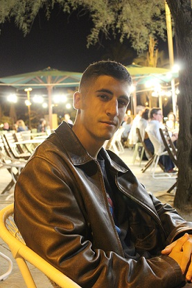
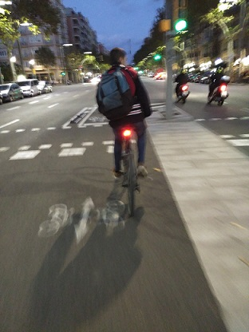
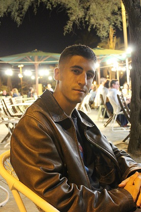
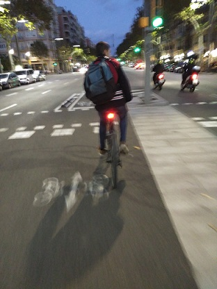

Hola
Soy Victor
 



Certificados
Educación
Instituto público La Pineda
CFGS-Desarrollo de Aplicaciones en entornos web
CFGS-Sistemas de Telecomunicaciones e Informáticos
DORTOKA disseny S.L. · Jornada parcialDORTOKA disseny S.L. · Jornada parcial
jun. 2022 - abr. 2023 · 11 mesesjun. 2022 - abr. 2023 · 11 meses
Carrer del Vinyar, 53-55, local, 08016 Barcelona · Presencial.
Trabajé en la empresa Dortoka Disseny en Barcelona, la cual está especializada en agregar valor a través del
análisis, diseño, implementación y desarrollo de un posicionamiento estratégico y operacional global que se
ajusta a los objetivos y necesidades previamente definidos.Trabajé en la empresa Dortoka Disseny en Barcelona, la cual está especializada en agregar valor a través del análisis, diseño, implementación y desarrollo de un posicionamiento estratégico y operacional global que se ajusta a los objetivos y necesidades previamente definidos.
Aptitudes: WordPress · Optimización para motores de búsqueda (SEO) · Control de versiones · Filezilla · intelij · JavaScript · PHP